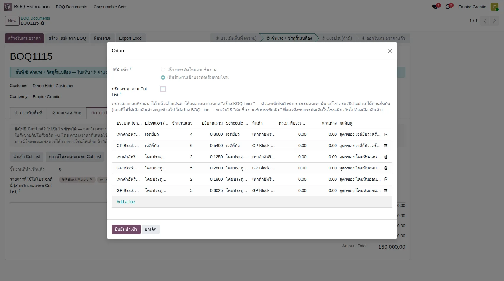
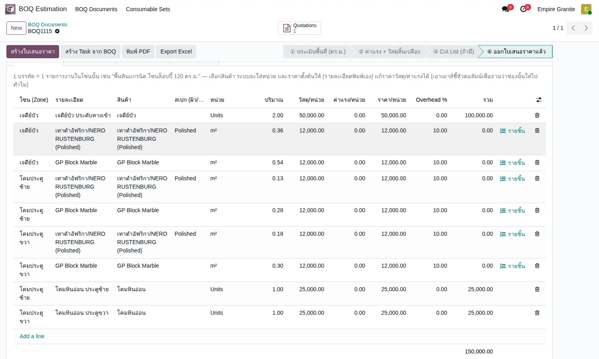
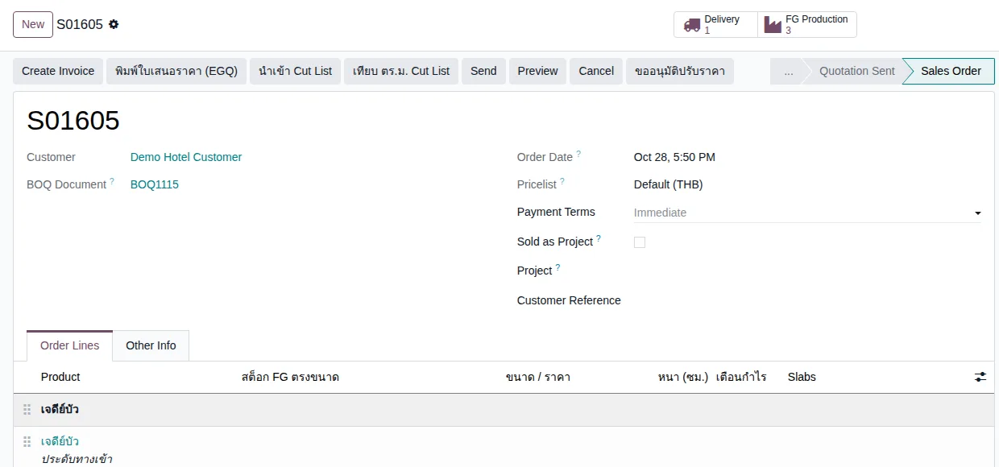
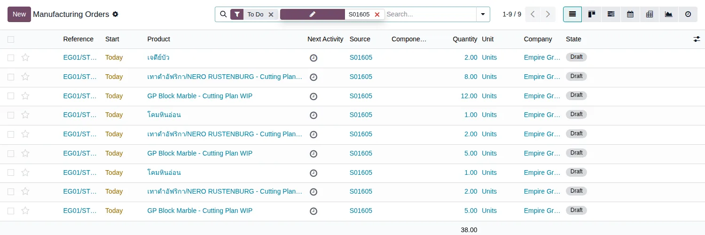
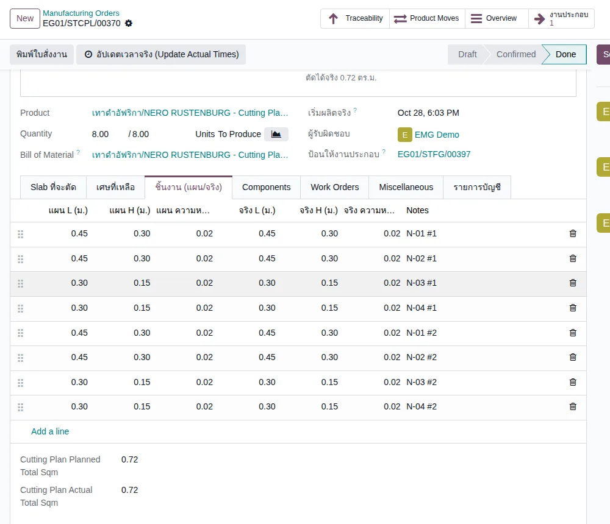
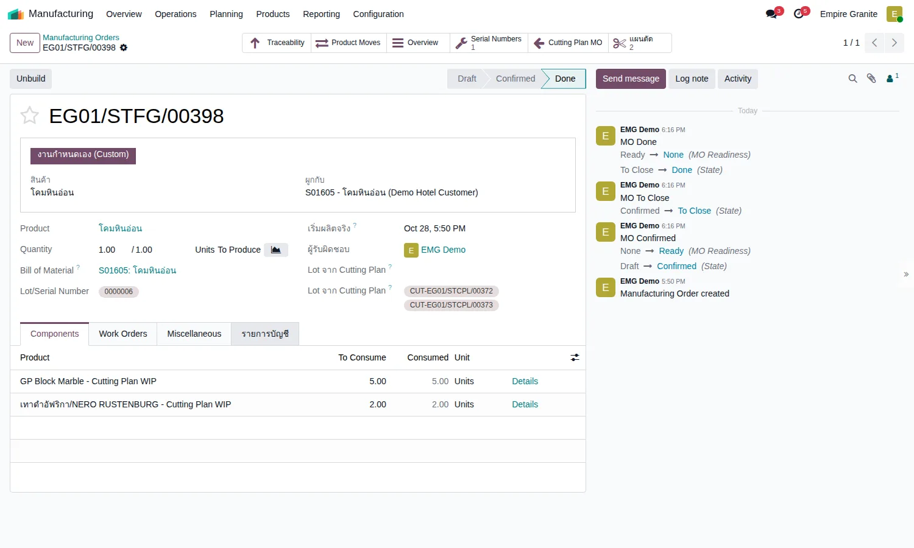
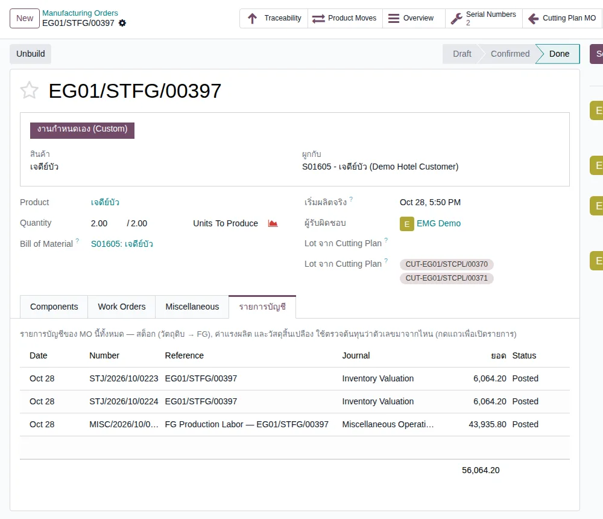

อัปเดตล่าสุด: 28 ตุลาคม 2569 (2026-10-28) · ภาพหน้าจอถ่ายจากระบบทดสอบ eg-tst เมื่อ 28 ตุลาคม 2569 (boq_estimation 19.0.1.54.0)
บทนี้อธิบายสินค้าสั่งทำที่ขายเป็น ราคาต่อชิ้น อย่างเจดีย์บัวและโคมหินอ่อน (เรียกว่า Custom FG) ว่าเดินจากไฟล์ BOQ ไปถึงใบสั่งผลิตส่งโรงงานได้อย่างไร และไฟล์ Cut List เข้ามามีบทบาทตรงไหน ใช้ไฟล์ตัวอย่างชุดเดียวกับที่ให้ดาวน์โหลดใน Library หมวด "สำหรับทดสอบ → Custom FG" ส่วนความต่างระหว่าง BOQ กับ Cut List โดยทั่วไป อ่านบทที่ 35
1. Custom FG คืออะไร
Custom FG คือสินค้าสำเร็จรูปที่ประกอบจากชิ้นหินหลายชิ้น หลายชนิด และขายเป็น ชิ้น ในราคาคงที่ ไม่ได้ขายเป็น ตร.ม. เหมือนพื้นหรือผนัง ในระบบตอนนี้มี 2 รายการ คือ เจดีย์บัว (ตั้งราคา 50,000 บาทต่อชิ้น) และ โคมหินอ่อน (25,000 บาทต่อชิ้น)
2. แนวคิดหลัก 6 ข้อ
- 1 บรรทัด BOQ = 1 สินค้า Custom FG ใส่จำนวนชิ้นและราคาต่อชิ้น และตั้งชื่อโซนเอง (เช่น เจดีย์บัว, โคมประตูซ้าย, โคมประตูขวา)
- ชื่อโซนคือตัวเชื่อม BOQ กับ Cut List โซนใน Cut List ต้องตรงกับโซนใน BOQ ทุกตัวอักษร (ในเทมเพลต Cut List ช่องโซนเป็น dropdown ที่ดึงจาก BOQ ให้ จึงเลือกแทนการพิมพ์ได้)
- Cut List ใส่ชิ้นหินของ 1 ชิ้นเท่านั้น ระบบคูณตามจำนวนที่ขายเอง เจดีย์บัว 2 ชิ้นจึงตัด NERO 8 ชิ้น (4 × 2) และ GP 12 ชิ้น (6 × 2)
- ชิ้นหินจาก Cut List ไม่ขึ้นใบเสนอราคา ระบบเก็บเป็น "บรรทัดสูตร" เบื้องหลัง ไม่เพิ่มยอด ไม่ขึ้น PDF ไม่ทำให้ราคาเปลี่ยน
- ไม่ต้องรอ Cut List เพื่อขาย ออกใบเสนอราคาและ Confirm จาก BOQ ได้เลย Cut List มาตามหลังเมื่อได้แบบ (ดูตารางเงื่อนไข หัวข้อ 5)
- ต้นทุนในใบเสนอราคาเป็นค่าประมาณ ใช้เตือนกำไรก่อนขาย ต้นทุนจริงเกิดตอนผลิต
3. ภาพรวมขั้นตอน
กล่องสีเหลืองคือจุดที่ต่างจากงานพื้น/ผนัง ขั้น 2 ใช้ Cut List เป็น "สูตร" ของสินค้า และขั้น 4 ได้ใบสั่งผลิตครบชุดโดยที่ไม่ต้องสร้างเอง
4. ขั้นตอนทีละหน้าจอ
4.1 นำเข้า BOQ ของเจดีย์บัวและโคม (Import Excel)
ไปที่ BOQ Estimation → BOQ Documents → Import Excel เลือกลูกค้า เลือกไฟล์ boq-import-example-custom-fg.xlsx (โหลดได้จาก Library หมวด สำหรับทดสอบ → Custom FG) แล้วกด อ่านไฟล์ ไฟล์มี 3 บรรทัด คอลัมน์ "สินค้าหิน" เลือกชื่อสินค้า Custom FG จาก dropdown ได้เหมือนสินค้า FG อื่น (กว้าง ยาว หนา เว้นว่าง เพราะขายเป็นชิ้น)
| โซน | สินค้า | จำนวน | ราคา/ชิ้น | รวม |
|---|---|---|---|---|
| เจดีย์บัว | เจดีย์บัว | 2 ชิ้น | 50,000 | 100,000 |
| โคมประตูซ้าย | โคมหินอ่อน | 1 ชิ้น | 25,000 | 25,000 |
| โคมประตูขวา | โคมหินอ่อน | 1 ชิ้น | 25,000 | 25,000 |
หน้าตัวอย่างแสดงจำนวนรายการ 3 · วัสดุรวม 150,000.00 · Overhead รวม 0.00 · รวม 150,000.00 กด สร้าง BOQ ได้ BOQ ใบใหม่ (ในการทดลองคือ BOQ1115)
4.2 นำเข้า Cut List ของชิ้นหิน
เปิด BOQ ที่เพิ่งสร้าง ไปแท็บ ③ Cut List ที่ช่อง "รายการที่ใช้ในโปรเจกต์นี้" เลือกสินค้าหินที่จะใช้ตัด 2 รายการ คือ เทาดำอัฟริกา/NERO RUSTENBURG (Polished) และ GP Block Marble (เลือกสินค้า FG ไม่ใช่ Block หรือ Slab) แล้วกด นำเข้า Cut List เลือกไฟล์ cutlist-import-example-custom-fg-cm.xlsx กด อ่านไฟล์ ระบบจับคู่ชิ้นหินเข้ากับโซนให้ทันที

หน้าตัวอย่างสรุปเป็น 6 กลุ่ม (โซน × ชนิดหิน) ผลจับคู่ของทุกกลุ่มเป็น "สูตรของ เจดีย์บัว" หรือ "สูตรของ โคมหินอ่อน" แปลว่าระบบรู้ว่าโซนนี้เป็นสินค้า Custom FG จึงสร้าง "บรรทัดสูตร" (ไม่ขึ้นใบเสนอราคา) ตัวเลข ตร.ม. ที่ระบบรวมให้ตรงกับที่คำนวณเอง
| โซน | NERO (ชิ้น · ตร.ม.) | GP Block Marble (ชิ้น · ตร.ม.) |
|---|---|---|
| เจดีย์บัว (ต่อ 1 ชิ้น) | 4 · 0.3600 | 6 · 0.5400 |
| โคมประตูซ้าย | 2 · 0.1250 | 5 · 0.2800 |
| โคมประตูขวา | 2 · 0.1800 | 5 · 0.3025 |
กด ยืนยันนำเข้า ระบบแจ้ง "เติมชิ้นงานเข้าบรรทัดเดิมแล้ว" และสร้างบรรทัดสูตร 6 บรรทัดในแท็บ ① ยอดรวมของ BOQ ยังเป็น 150,000.00 เท่าเดิม

ในภาพ บรรทัดสูตรของแต่ละโซนมีปุ่ม "รายชิ้น" ให้ดูขนาดทุกชิ้น และช่อง "รวม" เป็น 0.00 เพราะไม่ใช่ของที่ขาย ราคาต่อ ตร.ม. ที่เห็นในบรรทัดสูตรใช้ประเมินต้นทุนเท่านั้น ไม่เข้ายอดใบเสนอราคา
4.3 ออกใบเสนอราคา
กด สร้างใบเสนอราคา ที่ BOQ ได้ใบเสนอราคา (ในการทดลองคือ S01605) 3 บรรทัดตามที่ขาย ยอดก่อนภาษี 150,000.00 VAT 7% 10,500.00 รวม 160,500.00 บรรทัดสูตรไม่ปรากฏในใบเสนอราคาและ PDF
ที่บรรทัดของ Custom FG มีคอลัมน์ ต้นทุน/ชิ้น (ประมาณ) และ Margin/ชิ้น (ประมาณ) เพิ่มให้ (ก่อน Confirm ในการทดลองแสดงต้นทุนเจดีย์บัว 8,758.16 · โคมซ้าย 4,793.22 · โคมขวา 4,889.61 ต่อชิ้น) ตัวเลขนี้ คำนวณจากสูตรที่โหลดมา เป็นค่าประมาณ ไม่ใช่ต้นทุนจริง ใช้ดูว่าราคาที่เสนอยังมีกำไรหรือไม่ ถ้าต้นทุนประมาณสูงกว่าราคาขาย ระบบเตือนตอน Confirm
4.4 Confirm แล้วได้ใบสั่งผลิตให้โรงงาน
กด Confirm ที่ใบเสนอราคา ระบบสร้างใบสั่งผลิตให้เองทั้งชุด ไม่ต้องกดสร้างทีละใบ ที่ใบขายจะมีปุ่ม FG Production แสดงจำนวนใบสั่งผลิต และมีปุ่ม นำเข้า Cut List กับ เทียบ ตร.ม. Cut List อยู่ที่ใบขายด้วย

ในการทดลอง (ใบขาย S01605) ได้ใบสั่งผลิตรวม 9 ใบ ทุกใบมีสถานะ Draft รอโรงงานดำเนินการต่อ
| สินค้า / โซน | ใบประกอบ | ใบสั่งตัด NERO | ใบสั่งตัด GP Block Marble |
|---|---|---|---|
| เจดีย์บัว 2 ชิ้น | 1 ใบ (จำนวน 2) | 8 ชิ้น | 12 ชิ้น |
| โคมประตูซ้าย 1 ชิ้น | 1 ใบ (จำนวน 1) | 2 ชิ้น | 5 ชิ้น |
| โคมประตูขวา 1 ชิ้น | 1 ใบ (จำนวน 1) | 2 ชิ้น | 5 ชิ้น |

จำนวนที่ตัดคือจำนวนชิ้นใน Cut List คูณจำนวนที่ขาย เจดีย์บัว 2 ชิ้น จึงตัด NERO 4 × 2 = 8 และ GP 6 × 2 = 12 ส่วนใบประกอบผูกกับบรรทัดในใบขายและเห็นปุ่ม "แผนตัด" ที่นับใบสั่งตัดของตัวเอง (เจดีย์บัวมี 2 ใบ) ขั้นตอนหลัง Confirm ที่ทดลองต่อจนจบ อยู่ที่หัวข้อ 4.5 ถึง 4.9
4.5 ใบสั่งตัดที่โรงงานได้รับ
เปิดใบสั่งตัด (ตัวอย่าง NERO ของเจดีย์บัว) จะเห็นประเภทงาน "ถอดแบบ / Cutting Plan" แผน 0.72 ตร.ม. (NERO 0.36 × 2 ชิ้น) ระบบเลือก Slab ต้นทางให้แล้ว (ที่แท็บ "Slab ที่จะตัด" มีปุ่ม เลือก Slab อัตโนมัติ) และลงรายการชิ้นงานให้ครบที่แท็บ ชิ้นงาน (แผน/จริง) ตามรหัสและขนาดใน Cut List ของจริง เจดีย์บัว 2 ชิ้นจึงได้ N-01 #1 ถึง N-04 #1 และ N-01 #2 ถึง N-04 #2 รวม 8 ชิ้น (หน้าจอฝั่งโรงงานแสดงขนาดเป็นเมตร)

4.6 ตัดหิน
แต่ละใบสั่งตัดทำ 4 ขั้น: ① ย้ายไปสถานีตัด (ระบบย้าย Slab เข้าสถานีตัด ขึ้นข้อความ "ย้ายสำเร็จ") ② Confirm ③ แท็บชิ้นงาน กด คัดลอกแผนเป็นขนาดจริง (ถ้าตัดได้ตรงแบบ ไม่ต้องแก้ทีละชิ้น) ④ ถอดแบบเสร็จ สถานะเป็น Done และยอด "ตัดได้จริง" เป็น 0.72 ตร.ม. ทำครบทั้ง 6 ใบสั่งตัด (NERO 3 ใบ GP 3 ใบ) ได้ชิ้นหินกึ่งสำเร็จ (Cutting Plan WIP) เข้าสต็อก
4.7 ประกอบ
ใบประกอบ (ตัวอย่าง โคมประตูซ้าย) ผูกกับใบสั่งตัดของโคมนั้นอยู่แล้ว (ช่อง "Lot จาก Cutting Plan" ขึ้น CUT-EG01/STCPL/00372 และ 00373) และเมื่อกด Confirm ที่แท็บ Components จะมีชิ้นหินกึ่งสำเร็จมาให้ครบ (GP 5 ชิ้น + NERO 2 ชิ้น) สถานะ Available ต่อไปกด Generate Serial เพื่อสร้างเลขซีเรียลของสินค้า แล้วกด Produce All สถานะเป็น Done

4.8 ส่งของและใบแจ้งหนี้
ที่ใบขาย S01605 มีใบส่งของ EG01/OUT/00679 สถานะ Ready เมื่อผลิตเสร็จ (เจดีย์บัว 2 ชิ้น โคมหินอ่อน 2 ชิ้น Available) กด Validate ได้ทันที สถานะเป็น Done จากนั้นที่ใบขาย Create Invoice → Create Draft → Confirm ได้ใบแจ้งหนี้ INV/2026/00042 ยอดก่อนภาษี 150,000.00 รวม VAT 160,500.00 ตรงกับใบเสนอราคา
4.9 ต้นทุนจริงของ Custom FG
ต้นทุนจริงดูได้ที่แท็บ รายการบัญชี ของใบประกอบ แสดงทั้งมูลค่าหินจากสต็อกและค่าแรงผลิต

| สินค้า | รายได้ | ต้นทุนหิน | ค่าแรงผลิต | ต้นทุนรวม | สัดส่วนต่อรายได้ |
|---|---|---|---|---|---|
| เจดีย์บัว 2 ชิ้น | 100,000.00 | 6,064.20 | 43,935.80 | 50,000.00 | 50.0% |
| โคมประตูซ้าย | 25,000.00 | 5,753.70 | 10,000.00 | 15,753.70 | 63.0% |
| โคมประตูขวา | 25,000.00 | 5,753.70 | 10,000.00 | 15,753.70 | 63.0% |
| รวม | 150,000.00 | 17,571.60 | 63,935.80 | 81,507.40 | 54.3% |
กำไรขั้นต้นก่อนภาษี = 150,000.00 − 81,507.40 = 68,492.60 สองข้อที่ควรรู้:
- ค่าแรงผลิตเป็นค่ามาตรฐานต่อชิ้น แต่ถูกเติมให้ต้นทุนรวมถึง 50% ของรายได้ เจดีย์บัว (ค่าแรงมาตรฐานรวม 20,000 สำหรับ 2 ชิ้น ต่ำกว่าส่วนที่ต้องเติม) จึงถูกเติมเป็น 43,935.80 จนต้นทุนรวมเป็น 50,000 พอดี ส่วนโคมได้ค่าแรงมาตรฐาน 10,000 ต่อชิ้น ซึ่งเกินส่วนที่ต้องเติมแล้ว (ส่วนเติมขั้นต่ำคือ 6,746.30) ตั้งค่าได้ที่ system parameter fg_min_cost_ratio
- ต้นทุนหินสูงกว่าที่ใช้จริง เพราะไม่ได้บันทึกเศษ ใบสั่งตัด NERO ใช้งานเพียง 0.72 ตร.ม. แต่ Slab ที่ตัดทั้งแผ่น 3.36 ตร.ม. ราคา 5,443.20 ถูกนับเป็นต้นทุนของชิ้นงานทั้งหมด เพราะแท็บ "เศษที่เหลือ" ว่าง ถ้าโรงงานบันทึกเศษที่เหลือเข้าสต็อก ต้นทุนหินของสินค้าจะลดลง (ยังไม่ได้ทดลองกรณีบันทึกเศษ)
ที่ใบแจ้งหนี้ ต้นทุนขาย (COGS) ตัดตามมูลค่าหินเท่านั้น 17,571.60 ส่วนค่าแรงผลิตลงบัญชีแยกไว้แล้วตอนผลิตเสร็จ (รายการ "FG Production Labor") ไม่ซ้ำกับต้นทุนขาย
5. สรุปเงื่อนไขทั้งหมด
| สถานการณ์ | ระบบทำอย่างไร |
|---|---|
| ออกใบเสนอราคาและ Confirm โดยยังไม่มี Cut List | ทำได้ ราคาคงที่ตาม BOQ แต่ยังไม่มีสูตร จึงยังไม่มีต้นทุนประมาณและยังไม่มีใบสั่งตัด (ตามการออกแบบ ยังไม่ได้ทดลองซ้ำในรอบนี้) |
| นำเข้า Cut List ก่อน Confirm (ที่ BOQ) | ได้บรรทัดสูตร และตอน Confirm ระบบสร้างใบสั่งผลิตครบชุด (ทดลองจริง 28 ต.ค.) |
| นำเข้า Cut List หลัง Confirm แล้ว (ที่ใบขาย) | ตามการทดลอง 25 ต.ค. ระบบสร้างใบสั่งตัดและใบประกอบให้ในตอนนั้น ยังไม่ได้ทดลองซ้ำในรอบนี้ |
| Cut List หลังออกใบเสนอราคาแล้ว | เติมชิ้นเข้าบรรทัดเดิมของโซนเท่านั้น ราคาและจำนวนที่เสนอไปไม่เปลี่ยน |
| ชื่อโซนใน Cut List ไม่ตรงกับ BOQ | ระบบจับคู่ไม่ได้ แถวนั้นไม่ถูกนำเข้า ให้เลือกโซนจาก dropdown ในเทมเพลต |
| ใส่เจดีย์บัว/โคมในช่อง "รายการที่ใช้ในโปรเจกต์นี้" | ผิดที่ ช่องนี้ใส่ได้เฉพาะสินค้าหิน (NERO, GP ฯลฯ) |
| ช่อง Overhead % ในไฟล์ BOQ ว่าง | ระบบใช้ค่าตั้งต้น 10% บวกเข้าราคา ราคาต่อชิ้นจะสูงกว่าที่ตั้งไว้ ให้ใส่ 0 |
| ขายหลายชิ้น (เช่น เจดีย์บัว 2 ชิ้น) | Cut List ใส่ของ 1 ชิ้น ระบบคูณจำนวนให้ทั้งใบสั่งตัดและใบประกอบ |
6. สิ่งที่เปลี่ยนจากเดิม
| เดิม (ก่อน 27 ต.ค. 2569) | ตอนนี้ |
|---|---|
| เจดีย์บัว/โคมมาจาก Rate Library (บรรทัด "เจดีย์บัว - standard") และต้องตั้ง Rate ของหินล่วงหน้า | ไม่มี Rate Library เลือกสินค้า Custom FG ใน BOQ ตรงๆ และหินใน Cut List เลือกจากสินค้า FG ที่ระบุในแท็บ ③ |
| ขนาดชิ้นใน Cut List เป็นมิลลิเมตร | เป็นเซนติเมตร (ไฟล์เก่าที่หัวคอลัมน์เป็น mm ระบบยังอ่านและแปลงให้) |
| ไฟล์ Cut List ตัวอย่างเก่า 4 ไฟล์ | ย้ายไป Archived ใช้ไฟล์ชุดใหม่ใน Library หมวด สำหรับทดสอบ → Custom FG |
7. FAQ
ต้องใส่ชิ้นหินของทุกชิ้นที่ขายไหม
ไม่ต้อง ใส่ของ 1 ชิ้นต่อโซน ระบบคูณจำนวนให้เอง
Cut List เปลี่ยนราคาขายไหม
ไม่เปลี่ยน ราคาขายมาจาก BOQ เท่านั้น Cut List เพิ่มเฉพาะบรรทัดสูตรที่ไม่ขึ้นใบเสนอราคา
โคมซ้ายกับโคมขวาขนาดไม่เท่ากัน ทำอย่างไร
ตั้งเป็น 2 โซน (โคมประตูซ้าย, โคมประตูขวา) แต่ละโซนมี Cut List ของตัวเอง ตามไฟล์ตัวอย่าง
จะใช้ Cut List ของลูกค้าที่เป็นไฟล์เดิมได้ไหม
ถ้าลูกค้าส่งไฟล์รูปแบบอื่น ให้ย้ายข้อมูลลงเทมเพลตที่ระบบดาวน์โหลดให้ (มี dropdown โซนและรายการ) เพื่อให้จับคู่ได้ถูก
ดูไฟล์ตัวอย่างได้ที่ไหน
Library → สำหรับทดสอบ → Custom FG (เจดีย์บัว/โคม) มี 2 ไฟล์ คือ BOQ และ Cut List
8. ข้อจำกัดที่ทราบ
- รอบ 28 ต.ค. ทดลองครบถึงใบแจ้งหนี้ แต่ใช้ใบขายที่ไม่ได้ติ๊ก Sold as Project จึงไม่ได้ดู P&L แยกตาม BOQ ของงานนี้ (ถ้าต้องการ ให้ติ๊ก Sold as Project ที่ใบเสนอราคา ตามบทที่ 35)
- ไม่ได้ทดลองการบันทึก "เศษที่เหลือ" ของ Slab ต้นทุนหินในตารางหัวข้อ 4.9 จึงรวมค่าทั้งแผ่นของ NERO ที่ใช้ไปเพียง 0.72 ตร.ม. เป็นต้นทุนของสินค้า
- การเลือก Slab อัตโนมัติอาจเลือกแผ่นเดียวกันซ้ำให้หลายใบสั่งตัด (ดูหัวข้อ 4.5) โรงงานต้องกดเลือกใหม่ในใบถัดไป
- ไม่ได้ทดลองกรณี Slab ของหินนั้นหมดคลัง ส่งของบางส่วน หรือรับคืน
- กรณีนำเข้า Cut List หลัง Confirm (ที่ใบขาย) เขียนตามผลทดลอง 25 ต.ค. ไม่ได้ทดลองซ้ำ
- วิธีคำนวณ "ต้นทุน/ชิ้น (ประมาณ)" ในใบเสนอราคา (เจดีย์บัว 8,758.16 ต่อชิ้น) ต่างจากต้นทุนจริงต่อชิ้น (25,000.00) มาก เพราะค่าแรงผลิตและต้นทุนหินทั้งแผ่นไม่อยู่ในค่าประมาณ ตัวเลขประมาณจึงใช้บอกแนวโน้มเท่านั้น
- หน้าจอฝั่งโรงงาน (ใบสั่งตัด ขนาดชิ้นงาน) ยังแสดงเป็นเมตร ส่วนไฟล์ BOQ/Cut List กรอกเป็น ซม.
- ตัวอย่างขนาดชิ้นหินเป็นตัวเลขสมมุติ ปรับตามแบบจริง
- ไฟล์ตัวอย่างที่ให้ดาวน์โหลดต่างจากไฟล์ที่ทดลองเพียงหัวข้อและชีตคำอธิบาย ยังไม่ได้นำเข้าซ้ำ